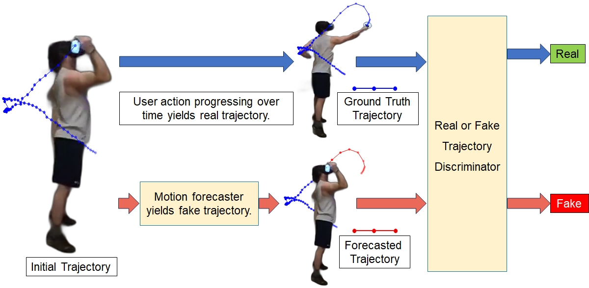
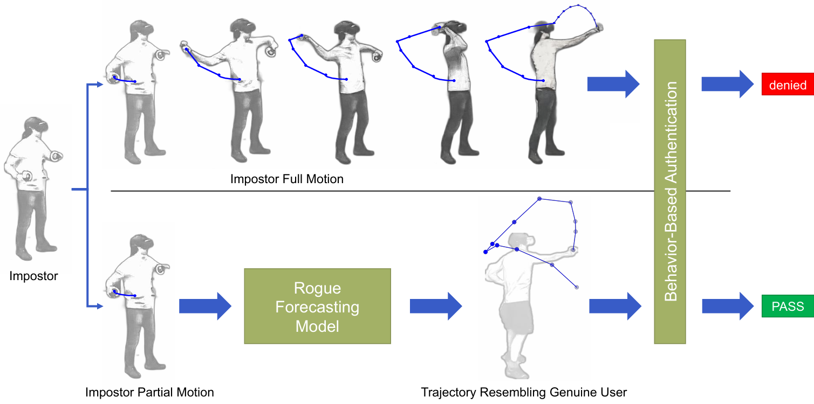
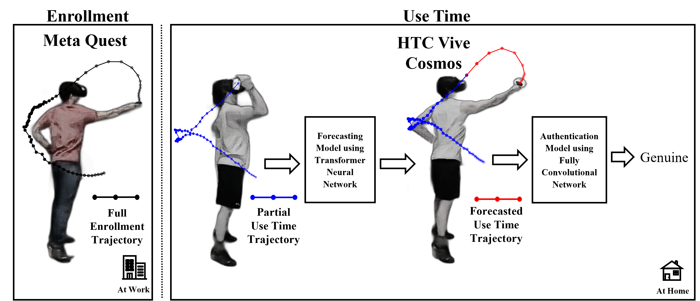
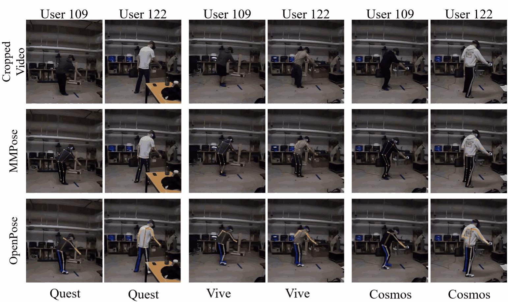
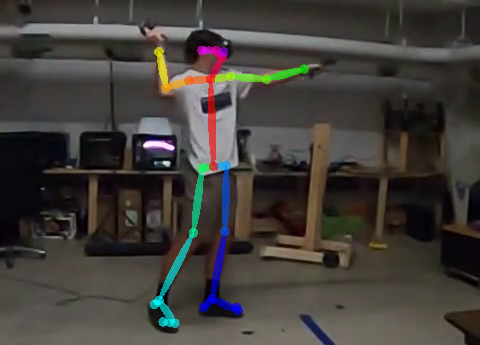
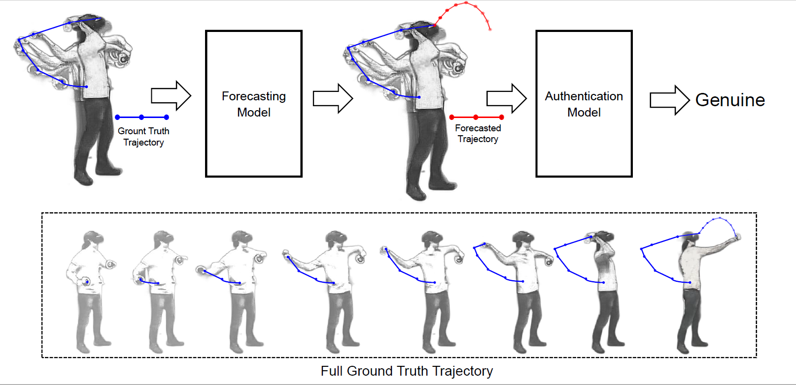

News
- Invited talk at CVPR 2026 Workshop on Generative AI for XR and Identity-based Applications (GenXR-ID), Denver, Colorado
Assistant Professor
Computing Sciences
College of Engineering, Technology, and Architecture (CETA)
Univerity of Hartford.
Contact me at minli@hartford.edu
My research focuses on machine learning, deep learning, 2D/3D computer vision, human robot interaction, and virtual reality. My recent work includes developing advanced deep learning models for VR-based biometric authentication and human motion forecasting, as well as building large-scale multi-modal datasets for the human robot interaction community.
My passion lies in creating intelligent, human-centered computing systems that are context-aware, personalized, and trustworthy, bridging the gap between cutting-edge AI research and real-world applications.

Li, M., Banerjee, N. K., & Banerjee, S. Real or Fake Motion: Protecting virtual reality (VR) behavioral authentication systems against motion forecasting attacks. Frontiers in Virtual Reality, 7, 1766672.
Li, M., Shivakumar, A., Banerjee, N. K., & Banerjee, S. (2025, November). Motion Forecasting Attacks on Behavioral Biometric Authentication Systems in Virtual Reality. In Proceedings of the 2025 31st ACM Symposium on Virtual Reality Software and Technology (pp. 1-11).
Li, M., Banerjee, N. K., & Banerjee, S. (2025, September). Cross-System Virtual Reality (VR) Authentication Using Transformer-Based Trajectory Forecasting. In International Conference on Virtual Reality and Mixed Reality (pp. 240-264). Cham: Springer Nature Switzerland.
Li, M., Banerjee, N. K., & Banerjee, S. (2025). Multimodal cross-system virtual reality (VR) ball throwing dataset for VR biometrics. Data in Brief, 61, 111827.
Li, M., Banerjee, N. K., & Banerjee, S. (2025, January). Predicting 3D motion from 2D video for behavior-based VR biometrics. In 2025 IEEE International Conference on Artificial Intelligence and eXtended and Virtual Reality (AIxVR) (pp. 223-230). IEEE.
Li, M., Banerjee, N. K., & Banerjee, S. (2024, January). Using motion forecasting for behavior based virtual reality (vr) authentication. In 2024 IEEE International Conference on Artificial Intelligence and eXtended and Virtual Reality (AIxVR) (pp. 31-40). IEEE.